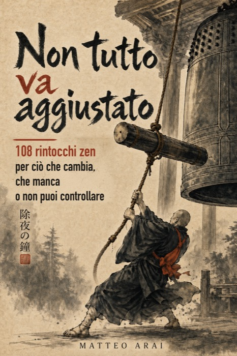

Non serve leggere questo libro dall'inizio. Puoi aprirlo dove ti serve.
Se non sai da dove partire, rispondi a sei domande brevi: bastano due minuti. Alla fine ricevi una piccola mappa personale con i primi rintocchi da leggere, scelti in base a ciò che stai attraversando adesso.
Non è un test e non dice niente su di te. È solo un modo per trovare la porta d'ingresso giusta, e poi lasciare che sia il libro a fare il resto.
La tua mappa è pronta. Lascia la tua email: te la mando subito, così la ritrovi quando ti serve.
Titolare del trattamento: Andolfi Silvio, contattabile all'indirizzo nontuttovaaggiustato@gmail.com.
La tua email, le risposte e la mappa risultante servono a consegnarti il percorso richiesto. Se selezioni anche la seconda casella, l'email viene usata per avvisarti dell'uscita di nuovi libri.
I dati collegati alla consegna della mappa vengono cancellati o anonimizzati entro 30 giorni. L'email usata per le novità viene conservata fino alla revoca del consenso e comunque sottoposta a verifica entro 24 mesi.
Puoi chiedere accesso, correzione, cancellazione o revocare il consenso scrivendo all'indirizzo indicato. Leggi l'informativa privacy completa.
Aprili nell'ordine che preferisci. Se uno non ti dice niente, passa oltre: non è il tuo momento per quella pagina. Il resto del libro resta lì, per quando servirà.
Ogni giorno pubblico un rintocco.
— Matteo Arai